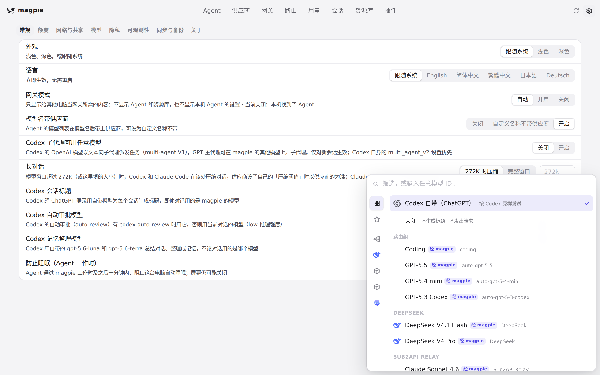
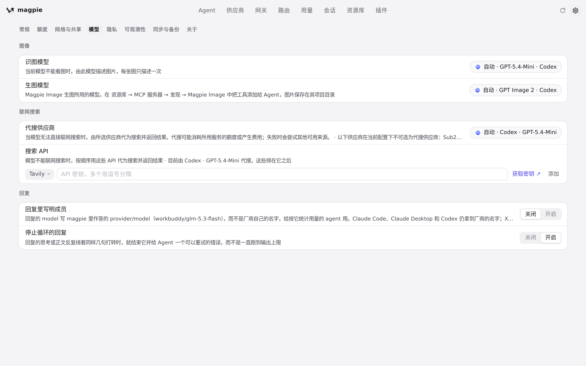

#1073 界面预览
commit 2681c8b · 回到 PR · 设置页三处模型选择（Codex 会话标题、图像识别、图像生成）改为在保存时按各自选择器列出的清单校验：模型不在清单里就返回 400 并保留原值，不再静默保存；同时把图像生成的候选清单抽成 imageGens（选择器内容不变）。
红线是鼠标走过的轨迹，红色圆环是一次点击；底部文字是这一步在做什么。空格暂停，← → 逐段查看。
 Codex 会话标题的模型选择器 · 设置 · 常规：Codex 会话标题一行当前的取值
Codex 会话标题的模型选择器 · 设置 · 常规：Codex 会话标题一行当前的取值

Codex 会话标题的模型选择器 · Codex 会话标题选择器展开后的模型清单

设置 · 模型页的两个模型选择 · 设置 · 模型：图像识别与图像生成两个模型选择
 设置 · 模型页的两个模型选择 · 设置 · 模型页向下滚动后的模型选择区域
设置 · 模型页的两个模型选择 · 设置 · 模型页向下滚动后的模型选择区域